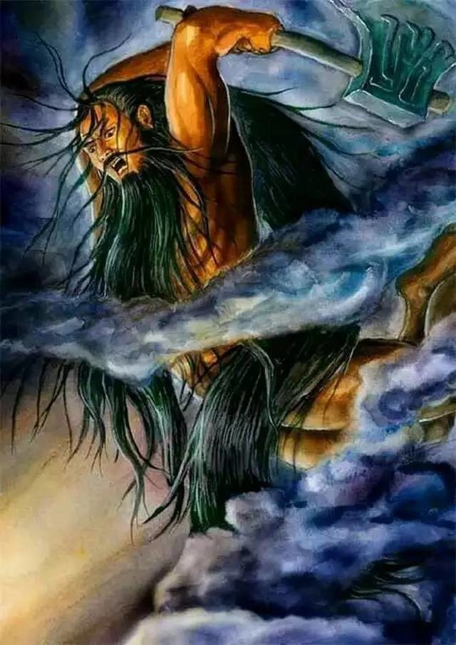

昆仑史曲
一， 开天辟地
宇宙的基本特徵是三元，或稱為三本元。 即宇、宙、宙心。 宇是多層次的宇宙空間，宙是多層次的宇宙時間，宙心是宇宙的生命，巨大的超級能量的光音色集團。 整個宇宙飄浮在無邊際的黑洞裡，猶如一個細胞。 宇是細胞體，宙是細胞的生命鐘，宙心是細胞的生命。 宙心有節奏的膨脹和收縮，稱為脈動，宙心一個脈動的時間相當於地球上的1600萬個太陽年。 佛經稱為一小劫； 20個脈動為一中劫，即3億2千萬年。 每八十個脈動有一個較大的脈動，稱為脈衝。 一個脈衝週期為一大劫，即12億8千萬年。
在宙心的一次脈衝時，宇宙發生了一次大爆炸，一個巨能光音色能量團從多維時空闖入了四維時空區，光爆持續了３億２千萬年，這個巨靈團幾乎喪失了全部能量。 佛經稱此為壞中劫期。 巨靈團的能量耗盡，光爆停止，四維時空內充滿了由光音色能量經光爆產生的氣。 這段靜止時間又經歷了３億２千萬年。 佛經稱之為空中劫期。
然後，氣狀物開始凝聚，形成物質性的塵點群，稱之為銀河系及其它星系，太陽、地球等就在其中。 有形生命體開始出現在地球上，並最終在二百多萬年前生命光音色能量團終於與地球上的一種有形生命體和合成一種較為理想的生命載體——人。 這段期間稱之為住中劫。 此後，就是宙心的下一個脈衝，宇宙又將進入壞中劫期。 如今，至壞中劫期的到來，即距下一個宙心脈衝的時間，尚有831萬年。 即地球生命尚有831萬年的時間，隨後，當宇宙下一個壞中劫期到來時，地球生命將全部重新開始。
星球世界的形成，以及地球生命的產生，生動地記錄在中華遠古神話傳說之中。 那個從宙心突破時空隧道來到四維時空的巨靈能量團，就是盤古大帝在中國神話史上又將其稱為第一代天皇。

他的能量留下一個女兒和三個弟子，女兒就是天王母后，人間稱之為媽祖。 三個弟子就是三清，即原始天尊、通天教主、太上老君。 媽祖有十個女兒，最著名的是西王聖母和九天玄女。 宙心生命氏族至今仍是母系社會，盤古歸隱消失後將王位傳給女兒天王母后（亦稱天后聖母），天后將王位讓於其夫——天岩君。 天岩君是第二代天皇，俗稱天公。
第二代天皇的繼承權是天后最寵的兩個女兒，西王聖母，和小女兒號稱美人王的九天玄女。 此兩女兒又將未來王位，即第三代天皇位，讓給她們的丈夫玄龍大帝。 玄龍大帝原是天國總侍衛，鎮守天庭三十六宮、七十二殿的門戶天龍門，其職為清都山水郎。
但玄龍生性散漫，天庭軍政重務就皆由西王聖母一人承擔。 有古詞為證：
我是清都山水郎，天教懶漫帶疏狂。
曾批幾露支風敕，累奏留雲借月章。
詩萬首，酒千觴，幾曾著眼看侯王。
玉樓金闕庸歸去，且插梅花醉洛陽。
天王母后在佛門被稱之為大光明王佛，或日月光佛，其有十個女兒，即十妙菩薩：妙善、妙生、妙文、妙珠、妙霞、妙雲、妙密、妙聖、妙青、妙蓮。 其中妙善即觀音，妙生即大勢至，妙文即文殊，妙珠即珠王（金剛智），妙霞即虛空印，妙雲即虛空日（碧霞元君），妙聖即西王聖母，妙密即普賢，妙青即青娘，妙蓮即香手菩薩（九天玄女）。
遠古時代，即商湯王以至黃帝，均認為九天玄女是中華部族的始祖，並稱之為鳳凰聖母，玄天女神、正義女神、戰神。 相傳，古易、奇門遁甲、大六壬、太乙神數、神符靈咒均出自玄天女神之手。 盤古大帝開闢物質生存區之後，因喪失能量而沉入三維空間。 在成劫期，妙善率大量生命靈光進入三維空間，並在地球上建立了極樂園，國號大羅金仙國，定國都於地球最高點青藏高原。
| 上 一 頁 | 下 一 頁 | 回 主 頁 |